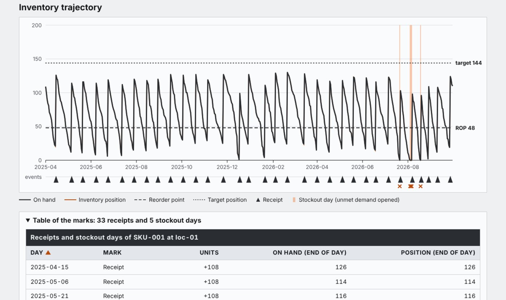
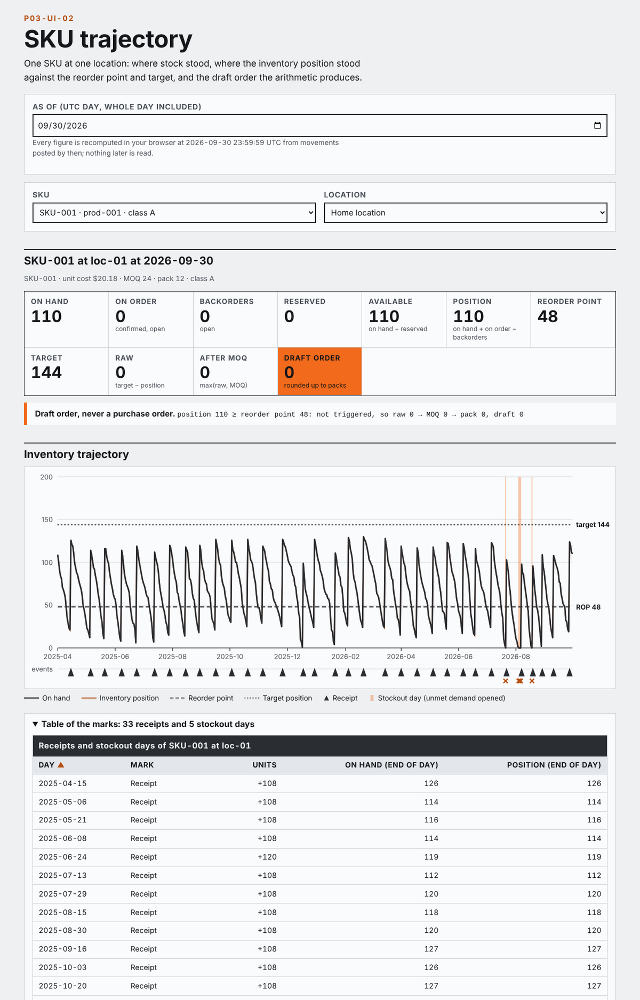
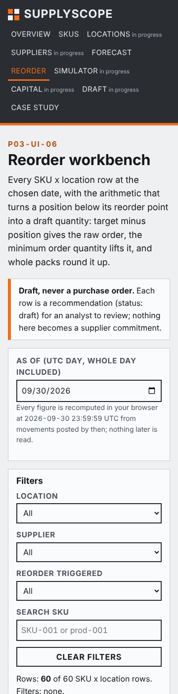

Dashboard · Operations analytics · FastAPI · React · 2026-10
What Should Be Ordered, When, and Under Which Service and Working-Capital Assumptions?
SupplyScope: an inventory trajectory that reconciles to an immutable movement ledger. Stock as of any instant with a declared day order, inventory position that never double-subtracts, reorder points from lead-time demand on supplier calendars, draft orders with the arithmetic shown (position 60 against a target of 120 becomes 72 units after the pack rounding), baselines-first forecasts with an information cutoff, and unmet demand as lost sale or backlog by policy. Synthetic data; project 03 of the Business Data Lab.

- Problem
- The weekly buying meeting reads on-hand from a stale export, treats units on order as if they were on the shelf, counts a partial receipt as complete, forecasts next month from a month that…
- Role
- Built and written by Rishit Raj Mathur; the case study names its sources and checks.
- Tools
- Python 3.11 (integer units, exact rational rates), PostgreSQL 16 (immutable movements, receipt triggers), FastAPI 0.162 (commands with idempotency keys, 401/403/409/422 contracts), SQL reference recomputation of stock, position and replenishment, TypeScript + React 18 + Vite, Playwright 1.55 (journey, 4 widths, 200% zoom), GitHub Actions (postgres:16 service, hosted runners only), 132 Python tests, 221 TypeScript golden checks, 36 browser tests
- Status
- Case study with a live demo
- Evidence
- Open SupplyScope · Code on GitHub

Everything is synthetic: the distributor, its 60 SKUs, three locations, four suppliers and every figure come from a seeded generator whose designed relationships and injected defects are published in an injection manifest; latent demand is published separately from the censored sales the site shows. The public site is a static demo over a published snapshot; the policy simulator runs in the browser on a copy with the published seed and nothing is ever ordered. The transactional behaviour (loading movements, reconstructing stock, simulating arrivals, recording unmet demand) is verified separately on GitHub-hosted runners against a transient PostgreSQL. Built from a written specification by a coordinating session delegating bounded work to implementation subagents; not a measurement of any real business.
01The problem
The weekly buying meeting reads on-hand from a stale export, treats units on order as if they were on the shelf, counts a partial receipt as complete, forecasts next month from a month that was a stockout, and applies the minimum order before rounding to packs. Nobody can say what the position was at the moment the order was decided.
SupplyScope fixes the arithmetic first: stock is the sum of an immutable ledger as of an instant with receipts applied before demand; position is on hand plus confirmed on order minus backorders, with reserved stock shown but never subtracted twice; a draft order is raw need, then the minimum, then the pack; and a forecast only counts if it beats the seasonal-naive baseline on the same rolling folds.
02What I built
Two implementations of one contract, checked against a hand calculation and each other.
- The contract: ledger reconstruction with a declared day order, negative stock flagged and never valued, position and availability definitions, replenishment with reorder point, target, minimum order and pack rounding on the supplier calendar, censored sales reported beside latent demand, naive and seasonal-naive baselines before any model, information cutoffs, receipts that cannot precede orders or lead times, unmet demand as lost sale or backlog but never both, policies compared on common random numbers.
- A known-answer fixture written first: on hand 40, on order 30, backorders 10 gives position 60; reorder point 70 and target 120 give a raw order of 60; a minimum of 50 and packs of 24 give 72 units; at position 80 nothing is ordered. A standard-library script reproduces it from the records, including the day on which applying the sale before the receipt would have driven stock to minus 35.
- The Python domain, PostgreSQL schema and FastAPI commands: load movements with duplicates rejected and raw rows kept; reconstruct stock as of an instant; forecast at a cutoff; draft orders with every arithmetic step persisted; simulate arrivals only after the lead time on the supplier calendar; record unmet demand by policy; export a buying plan that is never a purchase order.
- The static site: the same contract in TypeScript, an inventory trajectory per SKU with receipts and stockouts marked, the reorder workbench with the arithmetic visible, the forecast evaluation against baselines, a browser-only policy simulator and a case study.
03How it was built
- 01
Receipts, then demand, then review
On the fixture's twelfth day a sale is stamped at nine in the morning and a receipt at three in the afternoon. Applied by timestamp the stock would hit minus 35; applied in the declared day order it goes 0, 35, 0. The order is written into the contract, the SQL sort key and the simulator, so all three agree.
- 02
Position is not availability
Available stock subtracts reservations; position does not, because the reservation will ship from the same units the order replaces. A reserved row that a naive calculation would subtract twice is one of the injected defects the site must survive.
- 03
Baselines first
Every SKU gets a naive and a seasonal-naive forecast on rolling-origin folds before any model is fitted. The model is reported only where it beats the baseline on the same folds, and intermittent SKUs with zero actual demand in a fold show a null WAPE rather than a flattering number.
- 04
Two modes, disclosed
Mode A is the backend on a GitHub-hosted runner with a transient PostgreSQL. Mode B is the public site over a published snapshot; the simulator runs on a copy with the published seed and the page says that nothing is persisted or ordered.
04Results
The SKU trajectory on the synthetic snapshot (SKU-001 at its home location as of 2026-09-30: on hand 110 against a reorder point of 48 and a target of 144, so no draft order; 33 receipts and 5 stockout days marked):

The reorder workbench on a phone:

What the data supports. As of the end of the window the fill rate is 93.2%, some SKU somewhere had unmet demand on 290 of the 548 calendar days (the SKU-day stockout rate is 1.3%: 431 stockout SKU-days over 60 pairs), with 29,090.64 of working capital on hand at cost and 240 units in draft orders. Supplier sup-03 delivers on time 68.1% of the time against 82.9 to 86.5% for the others; location loc-02, whose capacity is 62% of its summed targets, fills 88.8% of demand against 95.5% and 96.5% elsewhere; the class A promoted SKUs show the censoring the generator designed, with latent demand above observed sales on exactly their stockout days. These are the generator's designed relationships, published in its injection manifest, found by the site; they are not findings about any real business.
Checks. The reference script reproduces the fixture (184 checks); 132 Python tests pass against PostgreSQL 16 on a GitHub-hosted runner, including the adversarial cases (censored sales, future promotion outcomes, pack rounding below the minimum, duplicate movements, a lead time spanning a closure, an intermittent SKU with zero-demand folds, a partial receipt, lost sale versus backlog, common random numbers, reserved stock, a receipt before its order, a cost change inside the period); 221 TypeScript golden checks and 36 Playwright tests pass; the TypeScript and Python pipelines agree overall, by location, supplier, product and class, and on every forecast fold. Evidence: the CI runs and the verification ledger in the source tree.
Found by review, being fixed. An independent reviewer confirmed that an earlier version of this page described the stockout figure as a share of SKU-days when it is a share of calendar days (corrected above, and the population metric will be redefined as a SKU-day rate so it reconciles across groups); that one unmet-demand event could be recorded as both a backlog and a lost sale under two scenarios, with the what-if backorder lowering the real inventory position; that a stale draft order is exported after a later movement because the request's dataset version is never checked; and that a product with parameters at only one of its locations reports the position of that location as its total. The forecast's promotion factor also applies the uplift fraction instead of one plus the uplift. The fixes and their regression tests are the next commits on the branch. Not built yet: SKU classification (C04) returns 501; the location, supplier, simulator, capital and draft screens are stubs.
05What I'd do next
- Build SKU classification (C04) and the location matrix, supplier desk, capital trade-off and purchase-draft screens.
- Assess the (s,S) simulator's statistical quality with replications and confidence intervals.
- Projects 04 to 10 of the lab follow the same gates.